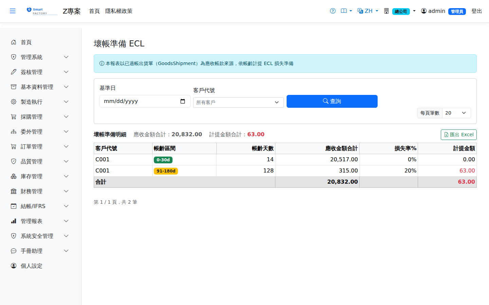

壞帳準備 ECLBad Debt Provision (ECL)
路由：/BadDebtProvision | 備抵呆帳提列與沖銷管理Route: /BadDebtProvision | Managing the bad debt allowance and its write-offs
依基準日把未收應收帳款按客戶與帳齡區間列出，套用 ECL 損失率算出應提列的壞帳準備，可匯出。本畫面只查詢、不入帳；備抵分錄在月結作業步驟 9 依 ECL 評估結果開立。Lists unpaid receivables by customer and aging band as at the chosen date and applies the ECL loss rates to work out the provision required; the list can be exported. This screen is enquiry only and posts nothing; the allowance entry is posted at step 9 of Month-End Closing from the ECL assessment.

壞帳準備畫面截圖（示意，實際欄位/資料依權限與查詢條件而異）Bad debt provision screenshot (illustrative; actual fields and data vary by permission and query criteria)
查詢Search
1
查詢列輸入條件後點「查詢」；欄位標題可點擊排序，清單下方有分頁導航。Enter your criteria on the query bar and click "Search"; column headers can be clicked to sort, and the paging controls sit below the list.
欄位說明Field reference
查詢條件Query criteria
| 條件Condition | 說明Guide |
|---|---|
| 基準日As-of Date | 帳齡的計算基準日；逾期天數＝基準日 － 發票到期日The as-of date aging is calculated from; days overdue = as-of date − invoice due date |
| 客戶Customer | 只看單一客戶的帳齡與準備金；留空為全部客戶Aging and provision for one customer only; leave blank for all customers |
| 欄位Field | 說明Guide |
|---|---|
| 客戶代碼Customer Code | 應收帳款的往來客戶Customer of the receivable |
| 帳齡區間Aging Bucket | 依基準日計算的逾期天數所落入的區間（區間定義見 ECL 準備畫面）The band the days overdue fall into as at the as-of date (the bands are defined on the ECL provision screen) |
| 帳齡天數Days outstanding | 該筆／該群應收自到期日起算的逾期天數Days overdue for that receivable or group, counted from the due date |
| 金額Amount | 該客戶在該帳齡區間內的未收應收帳款合計（本幣，總額 − 已收 − 已折讓）；客戶多付的發票以 0 計Unpaid receivables from that customer in that aging band (local currency, total − received − credited); invoices the customer has overpaid count as 0 |
| 損失率Loss Rate | 該帳齡區間適用的預期信用損失率（%）Expected credit loss rate applied to that aging band (%) |
| 準備金Provision | 金額 × 損失率，該客戶該區間應提列的壞帳準備Amount × loss rate, i.e. the bad debt provision for that customer in that band |